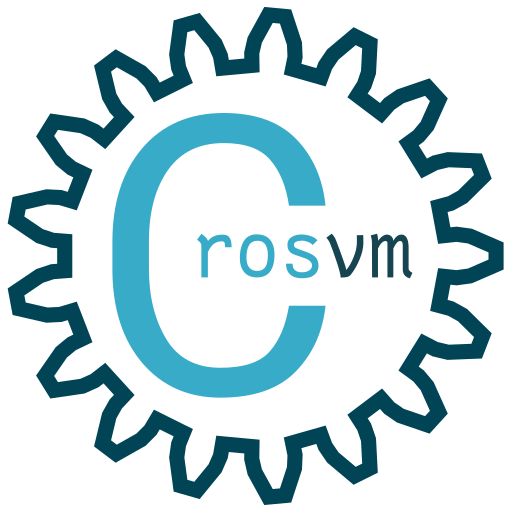

Introduction
The crosvm project is a hosted (a.k.a. type-2) virtual machine monitor.
crosvm runs untrusted operating systems along with virtualized devices. Initially intended to be used with KVM and Linux, crosvm supports multiple kinds of hypervisors. crosvm is focussed on safety within the programming language and a sandbox around the virtual devices to protect the host from attack in case of exploits in crosvm itself.
Other programs similar to crosvm are QEMU and VirtualBox. An operating system, made of a root file system image and a kernel binary, are given as input to crosvm and then crosvm will run the operating system using the platform's hypervisor.
- Source code
- GitHub mirror
- API documentation, useful for searching API.
- Files for this book are under /docs/.
- Issue tracker
